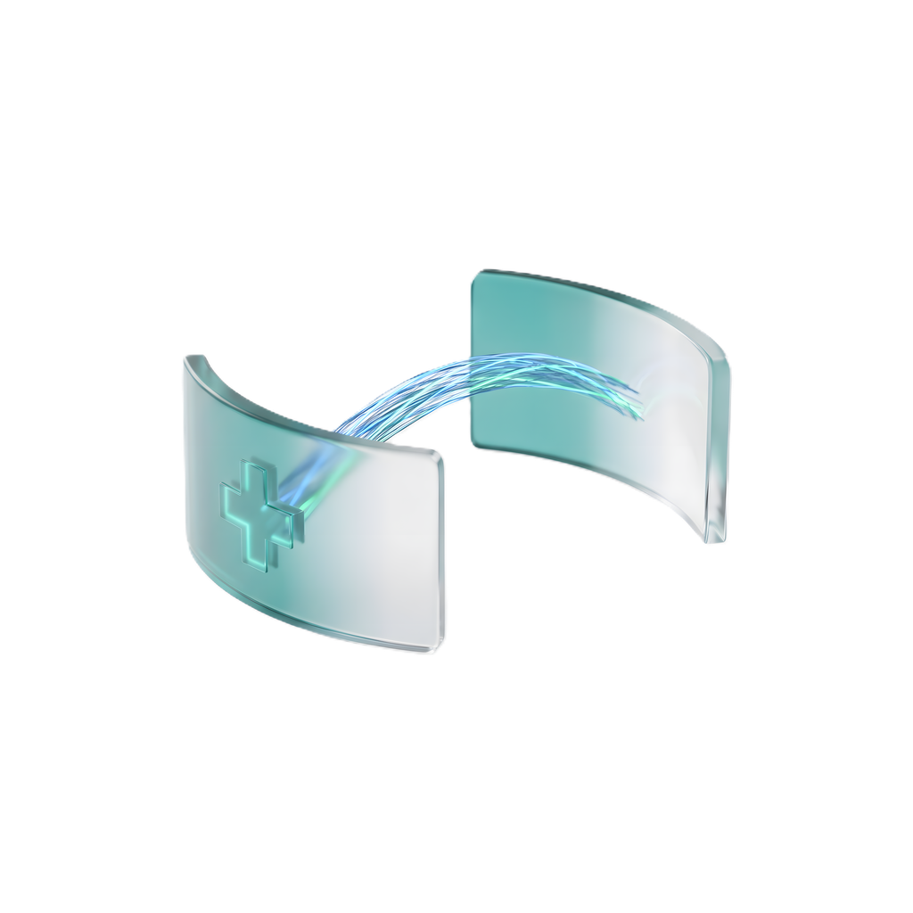

v1.0.4 • бесплатно • open source
От аппарата
до PACS за секунды
DicomBridge следит за папкой и сам отправляет исследования на PACS.
Скачал. Указал папку. Забыл.

📁Папкааппарат пишет DICOM
→
◈DicomBridgeчинит и отправляет
→
🗄️PACSисследование в архиве
РАБОТАЕТ С · Orthanc · Sante · Agfa · DCM4CHEE · любой C-STORE
Кракозябры вместо фамилий?
Знакомо. Русские имена приезжают в PACS нечитаемыми.
DicomBridge чинит кодировку сам: cp1251 → норма. Без ручной правки.
Иванов→Иванов
Строгий PACS всё отвергает?
Сжатые файлы, чужие UID, неверные теги — отказ.
Мост сам транскодирует, правит UID и теги. Принимают с первого раза.
rejected ✕→stored ✓
Просто работает в фоне
Никаких окон и дежурств у монитора. Оригиналы не трогает, ошибки складывает в очередь, присылает статистику.
watch ✓ fix ✓ send ✓
DicomBridge — это
Бесплатно и open sourceСкачал один раз — твоё навсегда. Без телеметрии.
Не трогает оригиналыРаботает только с копиями. Источник в безопасности.
Кириллица и тегиКодировка, UID, Patient ID, транслитерация.
Умная отправкаC-STORE / C-ECHO, авто-транскод сжатия.
Очередь ошибокНедоставленное ждёт и повторяет само.
Тихий фонТрей, автозапуск, автоочистка. Поставил — забыл.
Скачай DicomBridge
Тянем последнюю версию с GitHub…
DicomBridge …
Windows • …
Download for Windows